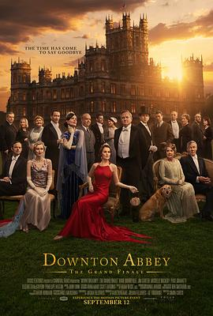

8.5
唐顿庄园3：盛大结局
Downton Abbey: The Grand Finale
2025
英国
评分 8.5
导演:
西蒙·柯蒂斯
演员:
米歇尔·道克瑞 / 休·博纳维尔 / 伊丽莎白·麦戈文 / 劳拉·卡尔迈克尔 / 吉姆·卡特 / 布兰登·柯伊尔 / 琼安·弗洛加特
类型:
剧情
剧情简介
上世纪三十年代初，经济危机的阴影笼罩着英国，贵族制度的辉煌也走向暮色。玛丽·克劳利（米歇尔·道克瑞饰）因卷入公众丑闻，使克劳利家族的声誉与唐顿庄园的未来再度陷入危机。曾经象征荣耀与传统的庄园，如今成了时代变迁的试炼场。面对经济崩塌、政治动荡与舆论围攻，家族成员不得不正视一个现实：唐顿不能再依靠血统生存，而必须学会与新时代同行。影片以典雅的格调与克制的情感铺陈，每个角色都迎来了属于自己的命运节点。休·博纳维尔饰演的罗伯特仍旧坚守传统，试图以尊严守护家族的尊贵；玛丽则象征新一代女性的独立与坚毅，在丑闻与重压之下努力维系庄园与家族名誉；伊迪丝以记者的身份游走于伦敦与唐顿之间，成为旧贵族与新社会的桥梁。导演西蒙·柯蒂斯以极高的情感浓度回归《唐顿庄园》的核心主题——“家族、信念与时间”。他让每一次对话都充满英伦式优雅与潜台词的张力。长廊的回声、晚宴的烛光、仆人间的低语，都构成了那个即将逝去的时代的挽歌。《唐顿庄园3：盛大结局》并非简单的谢幕，而是一场庄严的传承仪式。影片用极具仪式感的叙事，将克劳利家族的命运、仆人与主人的羁绊，以及庄园本身的灵魂一并安放。结尾处的金色黎明象征着旧世界的谢幕与新希望的开启——唐顿不再只是庄园的名字，而是一种关于尊严与爱的精神延续。